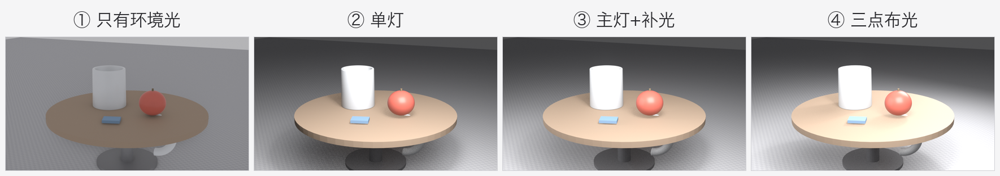
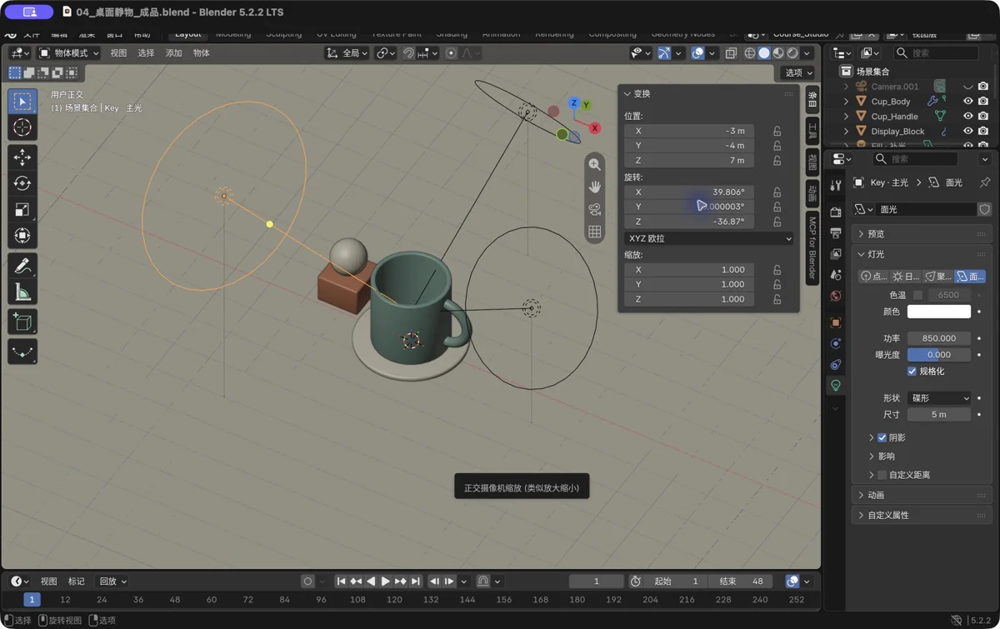
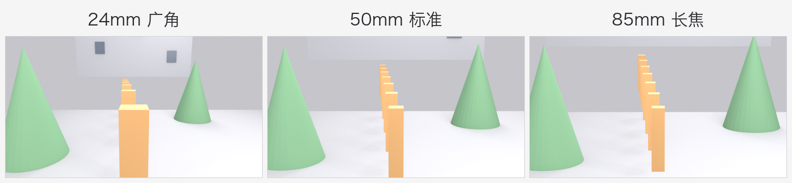
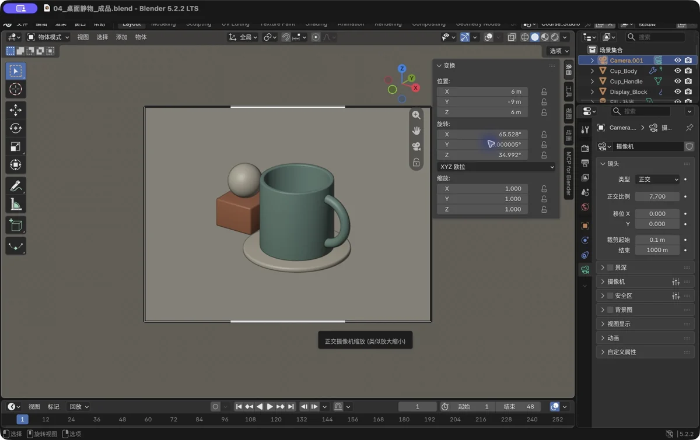
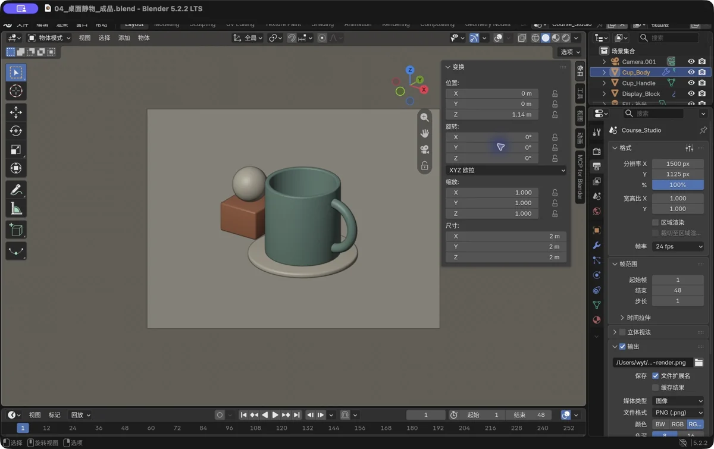
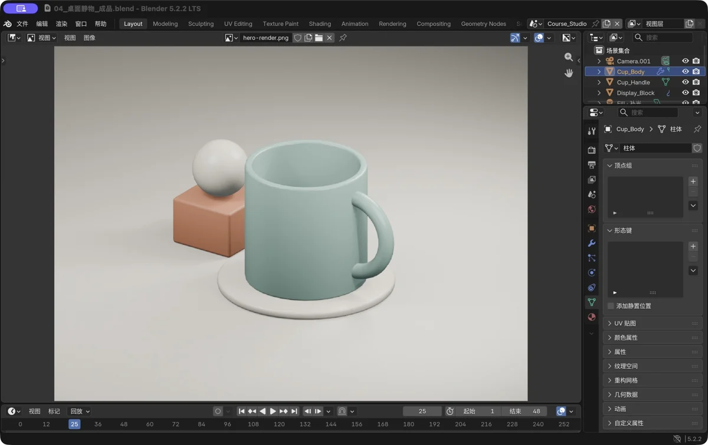
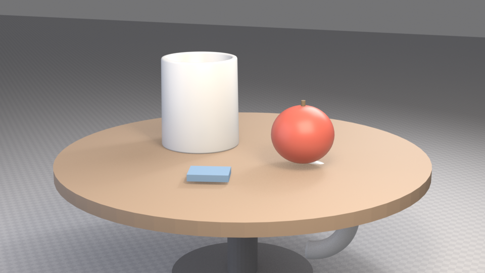

第 7 章 灯光、相机与渲染：你的第一张成品图
场景：模型有了、材质有了——这一章让它"出片"。灯光是 3D 的眼睛，相机是你的镜头，渲染键按下去的那一刻，就是见证奇迹的时刻。
学完你会
- 搭出一套万能的三点布光；
- 摆好相机、理解焦距对画面的影响；
- 认识两个渲染引擎（Eevee / Cycles）并做出选择；
- 渲染并保存你的第一张成品图。
核心概念 1：灯光的四要素
一盏灯能不能"用"，看四个参数（都在灯光的属性面板里）：
| 要素 | 说明 |
|---|---|
| 类型 | 点光（灯泡）/ 面光（柔光箱）/ 太阳光（太阳）/ 聚光（舞台灯） |
| 功率（Power） | 多亮，单位瓦特。凭感觉调：画面别死白也别死黑 |
| 颜色 | 暖黄 = 温馨 / 冷蓝 = 清冷 / 纯白 = 中性 |
| 尺寸（Size） | 面积光的尺寸决定阴影软硬。尺寸小 → 影子锐利（硬朗）；尺寸大 → 影子柔和（高级） |
💡 新手记住一句："面光（Area Light）+ 大尺寸" 拍什么都好看。它是摄影棚柔光箱的数字化身。
核心概念 2：三点布光——摄影棚的万能配方
拍产品、拍人像、拍模型，行业通用配方就三盏灯：
- 主光（Key）：最亮，从被摄物斜前上方打来，决定主要明暗；
- 补光（Fill）：较暗，从另一侧补亮暗部，让阴影不至于死黑；
- 轮廓光（Rim）：从后方勾边，把物体从背景里"剥离"出来，立体感的关键。
来感受四档灯光递进的效果（同一个静物场景）：

图 48 ①只有环境光（平、无影）→ ②单灯（立体但暗部黑）→ ③加补光（暗部透亮）→ ④加轮廓光（边缘发亮）
照抄就能开始的一组参数
不想从零猜数字？这套参数就是本书配图用的布光，直接照抄：
| 灯 | 大致位置 | 功率 | 尺寸 | 作用 |
|---|---|---|---|---|
| 主光 Key | 斜前上方 45° | 120 W | 2.5 m | 定明暗基调，影子主要来自它 |
| 补光 Fill | 另一侧、稍远 | 45 W | 3 m | 救暗部，别抢戏 |
| 轮廓光 Rim | 后上方 | 80 W | 2 m | 勾边缘，把物体从背景里剥出来 |
口诀：功率上主光最大、轮廓光其次、补光最小；距离都别贴脸（约物体尺寸的 3 倍远）。世界背景保持浅灰（0.5~0.65 的灰），相当于“免费的环境光”。
💡 逐盏调试法（推荐每次布光都这么干）：先只开主光 → 低分辨率试渲一张，只看明暗和影子；再开补光，调到“能读出暗部”就停；最后开轮廓光，看边缘有没有被勾出来。一次只改一盏灯，改完就看一眼——比同时拧三盏灯高效十倍。

图 49 真实软件截图：三盏面光的空间关系——右侧面板直接改功率和尺寸
核心概念 3：相机与焦距
相机就是你在虚拟世界里的镜头。核心概念只有一个：焦距（Focal Length）决定透视强弱。

图 50 让"最前面的柱子"在画面里保持差不多大：24mm 贴近拍（空间被拉宽）→ 50mm 标准（接近人眼）→ 85mm 退远拍（压缩感强）
| 焦距 | 气质 | 适用 |
|---|---|---|
| 24~35mm 广角 | 空间拉伸、有冲击力 | 大场景、室内 |
| 50mm 标准 | 接近人眼、自然 | 大部分静物、产品 |
| 85~135mm 长焦 | 压缩空间、背景干净 | 特写、车辆、人像 |
💡 想要“工程图感”？ 把相机类型从“透视”改成 正交（Orthographic），画面立刻没有“近大远小”，像图纸一样规整——拍机械、做对比图特别好用。

图 51 真实软件截图：正交相机的画框——框内才是成品，框外都是“工作台”
跟着做 1：把静物摆进相机
Ctrl+N新建场景，删掉默认立方体（选中X→ 删除）；- 搭一个简易"桌面"：加一个圆柱当底座（
S0.35）、再加一个环体当桌面（S2GZ0.7）——或者用Shift+A→ 网格 → 平面当桌板，四条腿用复制； - 把第 3 章的杯子（
Ctrl+O打开或从别的文件Ctrl+C/Ctrl+V拷过来）放大缩小摆桌上； - 加一个球当苹果（
S缩小，红色材质），一个扁方块当书（蓝色材质）； Shift+A→ 相机，小键盘 0进入相机视角，然后按N打开侧栏 → 勾选"Lock Camera to View（将相机锁定到视图）"→ 直接转视角摆构图；摆好后再取消勾选锁定，防止误动。
💡 相机构图小抄：主体别放正中间（三等分处更耐看）；画面留一点"呼吸空间"；先定相机再打灯，别反过来折腾。
💡 摆相机最快的方式：先用鼠标把视角转到好看的角度，再按 Ctrl+Alt+小键盘 0（视图 → 对齐视图 → 对齐活动摄像机至视图）——相机会瞬间跟到你的视角，比一点点挪相机快得多。
跟着做 2：三点布光上机
Shift+A→ 灯光 → 面光（Area），这是主光：G把它放到被摄物斜前上方，功率先给 100W 左右，尺寸拉大到 2~3 米；- 复制一盏（
Shift+D）放另一侧当补光：功率降到主光的 1/3（如 35W），更远一些； - 再复制一盏放到物体后上方当轮廓光：功率可以给得足（如 80W），从背后"怼"向物体边缘；
- 三盏灯对照第 7 章的图调试：主光照亮主体、补光救暗部、轮廓光勾边。
调光心法：调一个、看一眼，别一次改三盏。每一盏灯都可以在属性面板里改颜色——暖黄的灯 + 冷色的补光 = 大片的"冷暖对比"质感。
跟着做 3：渲染你的第一张成品图
- 顶部属性面板点相机图标（渲染属性）；
- 渲染引擎：下拉框中选择。 - Eevee：实时渲染引擎，秒级出图，本教材的所有配图都是它渲染的——新手首选； - Cycles：光线追踪引擎，慢但更"真"（玻璃、反射更准确）。部分精简版本不包含 Cycles，用 Eevee 也完全够学完本书；
- 分辨率保持默认 1920×1080（或调成 1280×720 提速）；
输出设置速查：
| 设置 | 建议 | 说明 |
|---|---|---|
| 分辨率 | 1920×1080 | 想提速就 1280×720 |
| 试渲染 | 分辨率百分比 50% | 先看构图，正式出图改回 100% |
| 格式 | PNG / RGB | 只有要透明背景才用 RGBA |
| 色彩管理 | 保持默认别乱动 | 整个项目统一，方便前后对比 |

图 52 真实软件截图：输出设置面板——分辨率和百分比都在这儿
4. 按 F12 开始渲染；
5. 渲染结束后，顶部菜单 图像 → 另存为 → 选 PNG 格式，存到你的项目文件夹——你的第一张成品图诞生了。
⚠️ 只按 Ctrl+S，渲染图是不会自己存下来的。 保存 .blend 存的只是工程；图片要单独“图像 → 另存为”存成 PNG。两件事，别搞混。

图 53 真实软件截图：渲染结果已经在图像窗口里——用“图像 → 另存为”把它存成 PNG

图 54 教材同款场景的成品：三点布光 + 50mm 相机 + Eevee 渲染
新手常见坑
| 坑 | 说明 | 对策 |
|---|---|---|
| 渲染出来一片黑 | 没有灯 / 相机对着空处 / 世界背景全黑 | 先 小键盘 0 看相机到底拍到了什么；再加灯 |
| 画面死白/过曝 | 灯太亮或太多 | 减功率；或渲染属性里调低"曝光（Exposure）" |
| 阴影很糊很脏 | 灯的尺寸太大或角度太散 | 想要硬朗阴影就把灯尺寸调小 + 靠近一点 |
| Eevee 里反射是"假"的 | 屏幕空间反射的局限 | 属正常；重要反射镜头换适合的引擎或补反射体 |
| 相机视角没法调 | 没在小键盘 0 的相机视角里 / 没开 Lock Camera to View | 小键盘 0 切换进相机视角再调 |
| 打光顺序错了 | 先打灯后构图，换构图灯全废 | 先定相机与构图，再围绕相机打灯 |
过关标准
- 我能搭出三点布光：主光定基调、补光救暗部、轮廓光勾边；
- 我按“逐盏调试法”做过一次布光（只开主光 → 试渲染 → 加下一盏）；
- 我渲染并单独保存了自己的第一张 PNG 成品图。
自检题
- 三点布光的三盏灯各叫什么、各干什么？补光大概给主光的多少亮度？
- 想拍出"柔和的高级感阴影"，关键调哪个参数？
- 24mm 和 85mm 拍同一个物体，画面气质差异是什么？
- 为什么本教材全程用 Eevee 也够？它和 Cycles 的根本差别是什么？
- 渲染按哪个键？成品图保存要走哪条菜单？
答案见文末。
自检题答案
- 主光（Key，主要照明）、补光（Fill，拯救暗部，约主光的 1/3）、轮廓光（Rim，勾边立体）。
- 灯的尺寸（Size）——越大影子越柔和（配合面光类型）。
- 24mm：贴近拍，近大远小夸张、空间感被拉宽；85mm：退远拍，前后压缩、画面干净。
- Eevee 是实时渲染，几秒出图，配合基础材质与灯光效果已足够完成本书全部练习；Cycles 是光线追踪，物理更严格但慢得多。
F12渲染；渲染窗口里 图像（Image）→ 另存为（Save As），选 PNG。
小结
- 灯光四要素：类型、功率、颜色、尺寸；面光+大尺寸=高级感。
- 三点布光：主光定基调、补光救暗部、轮廓光勾边缘。
- 相机：先构图后打灯；焦距 50mm 起步，广角冲击、长焦压缩。
- 引擎：Eevee 快（本书首选），Cycles 真但慢。
F12渲染 → 另存 PNG = 你的第一张作品出片。- 到这里，基础篇结束——你已经拥有完整的"建模→材质→布光→出片"工作流了。